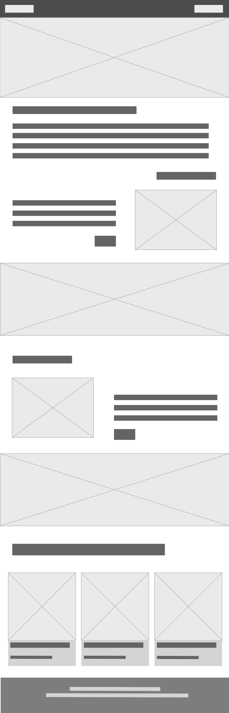
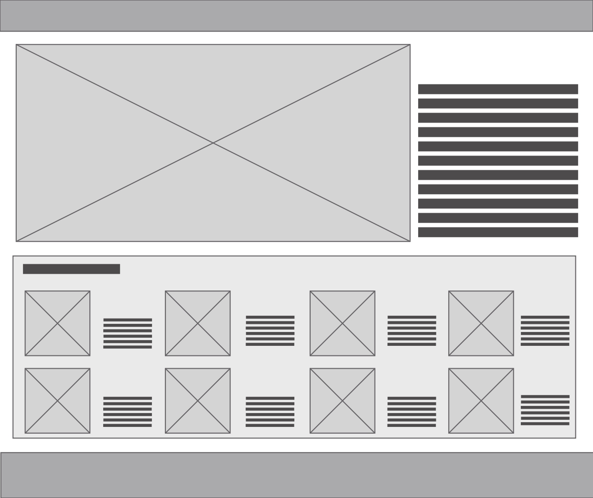

Antecedentes

Grand Theft Auto Website

Call of Duty Warzone Website

Fall Guys Website

Capcom Website
Wireframe de portada
Lo destacabable de el antecedente de la página de Call of Duty es la manera de diagramacion de las imágenes al igual que el carrusel, lo cual me parece muy interesante. Lo reacatado de Capcom al igual que Call of Duty es la manera en la que se dassrolla el carrusel y ademas la manera en la que son presesntados los antecedentes, es decir, los links del final. De Fall Guys y Grand Theft Auto lo rescatado más que nada es la diagramación de la información que se muestra en la página. La lectura de mi wireframe va a una entrada con un carrusel que indicará una serie de imágenes de los Resident Evil sacados por Capcom, y luego de eso iría a mostrar los últimos juegos con su historia y personajes principales de cada uno. Esta diagramación va a que su modo de lectura sea fácil de comprender.
Wireframe de página interior
Lo que se vería aqui sería una página mas interactiva que la portada mostrada anteriormente, rescatando diferentes diagramaciones de los variados antecedentes y que muestren una información más detallada.